Photographing Maps
First published: 6/2017
Last Update: 8/2018
Maps arrive to the DIU in folios and each folio is represented by a single work order in the Metadata Management System. Some folios arrive with work order numbers written on them, but some do not. It may be necessary to search by Map Div identifiers written on the back of each map to find the correct work order.
It may be helpful when photographing maps to think of large format manuscript projects or clippings files shooting conventions in that it’s best to change the camera height as little as possible while maintaining enough resolution to read the info on each map. Begin each session by separating the maps into groups of similar sizes and shoot each group separately before changing the height of the camera.
Photography
Setup
Sheet maps are generally photographed recto only (most are linen-backed), unless the map comes encapsulated with a booklet or the verso contains pertinent information worth capturing and displaying long term.
Large maps may require the table to be built out to support. Plastic shipping crates and a layer of foam core can be used to achieve the correct height. It is best to handle each map by picking it up corner to corner (diagonally across). Maps are large and often delicate, and it may be necessary to ask for help with handling. Be aware of stray fibers from the linen backing on many maps that may block info on the recto.
Many maps are printed on thin paper and will require off-white mat board beneath. Don’t worry if the mat board is not big enough to cover the entire map, only the image area needs to be covered for each shot.
If a map requires glass to flatten, or if a map comes encapsulated in Mylar, it may be necessary to mitigate unwanted reflections by using one of the black cards specifically designed to shoot through. It will eliminate reflections from the camera, camera peripherals, and environmental sources. Additionally, cover the TTI column with black paper to avoid reflection from the measurement marks. There are times when this black card is not large enough on its own to eliminate all reflections- i.e., from the overhead vents- use an extra set of light stands with black flags to block these out. Lastly, it’s easy to pick up reflections from clothing and skin when using the foot pedal near an encapsulated item- trip the shutter from the keyboard instead.
When using glass, remember to include the color target under the glass as well. When shooting an encapsulated item, it’s a good idea to lay a slip of Mylar over the color target. In both scenarios the white point and white balance will be affected.
Around 20% overlap is ideal for images requiring stitching when no canvas break is present. When a canvas break is present, the overlap can be greatly reduced.
Lighting
Lights are generally between 64" and 80" high (floor to top of pin) and pointed 20 degrees down. Some maps will have a coating that can require the lights to be raised to avoid glare. For encapsulated items, the light will often catch on the edges with this setup. The best way to lessen this is by lowering the lights all the way, point the heads 90 degrees at each other, and place the stands at the corners of the table. If any reflection remains, it may be possible to reframe so that the edges of the Mylar are cut off (but not the map itself).
Depending on position relative to the lights and camera, the target may appear washed out when it is placed near the edge of the table. As long as the correct values are being achieved for each color patch, the target’s overall appearance is not a reliable indicator of exposure.
It can be difficult to maintain a completely flat grey seamless background paper surface on a larger copy stand and any unevenness can cause up to a 10-point difference in background exposure but should not affect the map itself.
Focus
With the current TTI copy stand, high-resolution back, and lens combination, focusing can be a challenge. Maps will usually fill the frame to the edges, which demands a lot from the lens and and extremely level copy stand camera mount. The grain of the paper will often be much less prominent at 300DPI and under, which makes judging focus difficult. It may be helpful to compare a current session with map sessions that have been through the QC process in the past. There may be some amount of compromise in sharpness when balancing focus between the corners and the center. If one corner appears significantly softer than others, then the camera likely needs to be leveled again.
Note: As of late the focus appears pretty dialed in, though one corner is always the toughest of the bunch. One trick is to achieve focus first on the problem corner. When that corner holds the rest of the map is usually up to par. Additionally, when pushing the limits of the lens coupled with the IQ3 100 MP back, it’s often not enough to check for only 5 points of focus. Add to the mix the cardinal points as well, thus making 9 points to check total. Again, only one or two of these points might be difficult to balance, so concentrate on these points first and the rest of the map should fall into place.
Metadata and File Naming
Once the contents of a folder are photographed, the next step is to verify capture counts and make additions to the work order as necessary. If any maps required stitching, additional captures will need to be added to the work order. For example, if a map is photographed in two parts, the item record will need three captures to account for the components and the stitched file (both components and final stitched files are saved in the repository in case stitching needs to be revisited in the future.
In order to find the map on the work order, pull up the work order and use the search function in the browser (command + f). Read the item ID off the back of the map, plug the ID into the search box, find the item in question, and adjust the capture count if necessary. The item sequence number can be used to name the corresponding capture(s) in Capture One. If there is more than one capture per item, a letter can be added after the number (i.e., 1, 1a, 2, 2a, 2b, 2c, 3, 4, etc.).
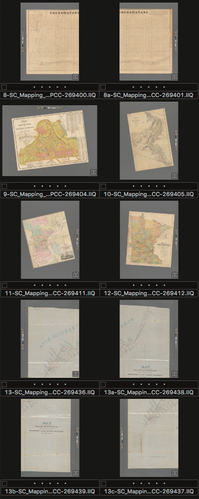
In the screenshot above item 8 is made up of two component pieces and item 13 is made up of four. Once the elements for each item are stitched together in Photoshop, these stitched images can be returned to the Capture folder with their new names, 8b and 13d respectively (or any letter designations that work for sequence). Everything will then fall into proper order for a Batch Rename.
Processing
It is important to make sure all adjustments are carefully made before processing files to be stitched together. Any moiré discovered in a stitched map later on will need to be corrected, reprocessed, and re-stitched.
Moiré
The great majority of sheet maps will present a challenge to the camera sensor grid and produce moiré due to the prevalence of fine parallel ink lines and halftone printing. Compounding the problem is the desire to shoot at the highest ppi possible, which means that maps often need to fill the frame giving little opportunity to use rotation to mitigate. A good starting guideline is to keep the moire amount at 45 with a pattern of 8 for the background layer. Moire correction may need to be boosted to 100 in certain areas. If moire remains at 100 or lower when attempting to avoid colors bleeding together or noticeably desaturated, leave a note on the Trello card to notify the photographer performing QC that nothing more can be done.
While moire reduction issues are easier to spot when applying filtration to a colored map, or to color details within a map, it can happen more subtly on warmer off-white maps as well. Use your best judgement as to when subtle overall changes may be warranted in order to reduce a particularly distracting moiré.
When sorting a Capture One session by date, maps will also sort by camera height. This can help when applying batch moire adjustments to a number of distinct items at once.
Here are a few examples of how to approach moire:

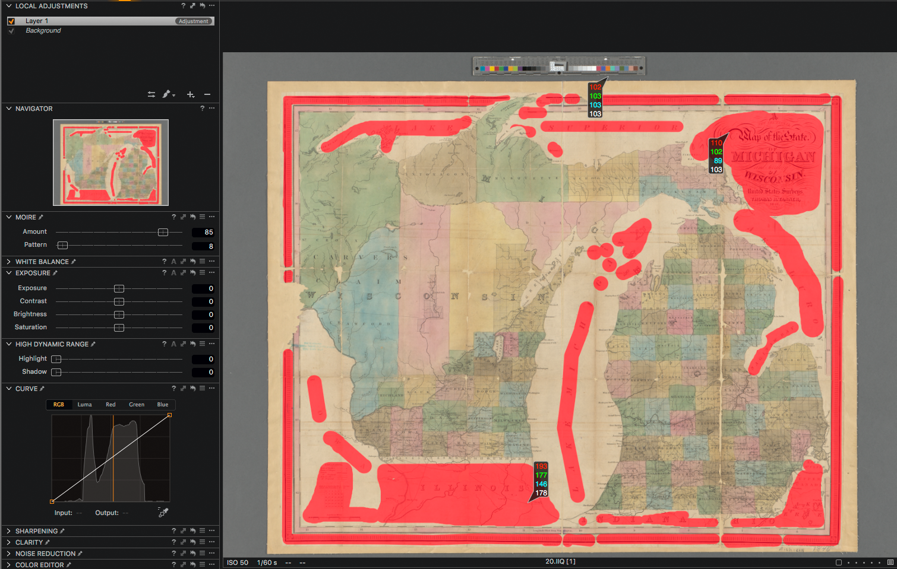
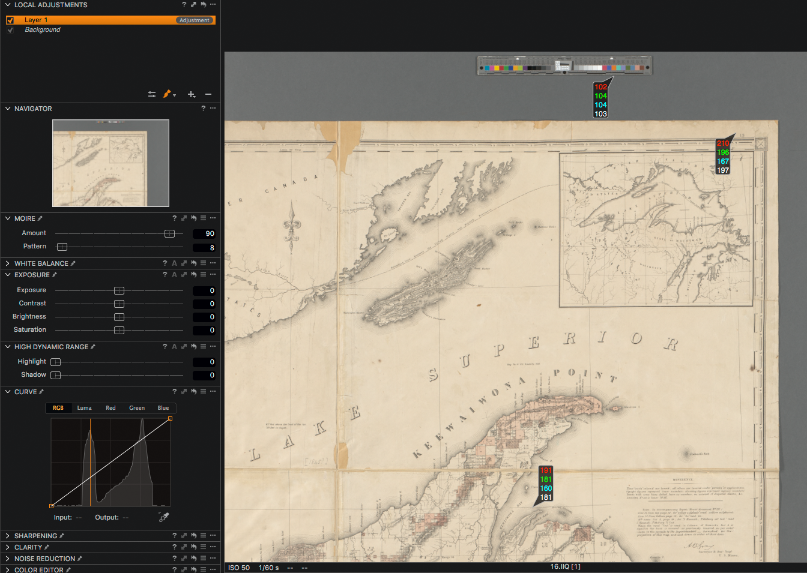
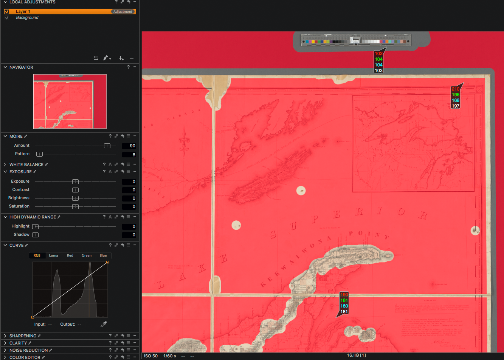
Note that the map edges and canvas seams are removed from the local adjustment, this in order to prevent color smearing.
Examples showing moire filtration applied and not applied to edges and seams:
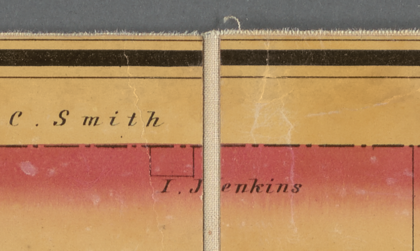
Stitching Using Photoshop Photomerge
Stitching should be done using images processed with the U file recipe. S files will be created later on in Photoshop.
Target removal
Begin by opening the files to be stitched and crop out or remove the target from each except one. In other words, there will only be one target in the final composite image. Do this by pasting blank seamless over the area with it feathered a bit. Make sure they are saved as Photoshop’s photomerge option only works with saved files.
Determining Photomerge mode
With both images to be stitched open, go to File > Automate > Photomerge, and click “add open files”
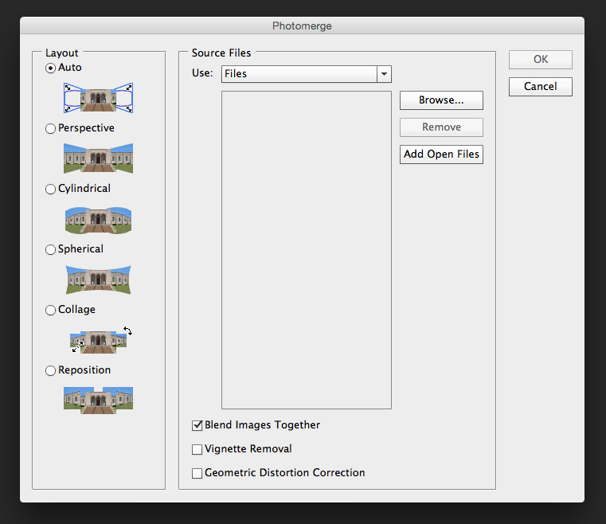
In general, only use the ‘collage’ method of stitching with photomerge. As the diagrams on the left in the prompt show, other methods allow for too much manipulation of the images to get them to fit together. This can especially become an issue when stitching more than two images.
When stitching together more than two images, work by doing two at a time:
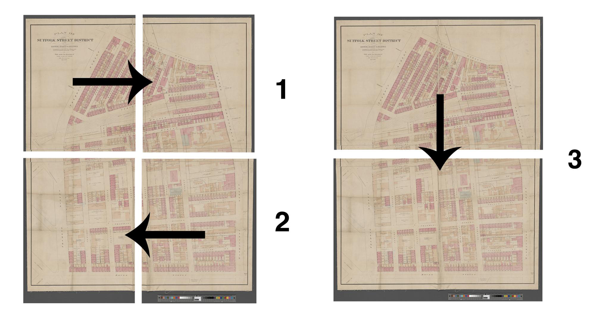
Checking & fixing alignment
The easiest way to check that images have lined up is to invert the colors on one side (not the layer mask) and follow the line that photomerge has created while zoomed in at 100%.
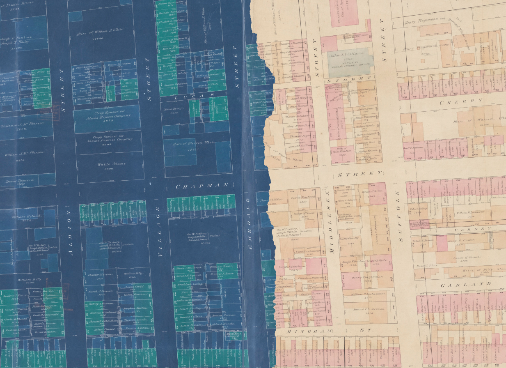
When Photoshop merges two images, it creates an identical layer mask for each one in the composite. If the layer mask needs to be manipulated to get parts of the map to align properly, begin by deleting the lower layer’s mask. Using the brush tool, add and subtract areas of the top layer until a point is found where everything is lined up properly. In some cases, the clone stamp and/or healing brush may be required to get things perfect.

Stitching Using Manual Methods in Photoshop
Maps often have seams where the folded paper has worn away to reveal the linen backing. It can be less time consuming to stitch maps together along these seams than when using photomerge. Additionally, maps needing to be stitched without a canvas seam can be done so using manual means.
Begin by opening in Photoshop the U file captures to be stitched.
Choose one of the captures and double its canvas size in the direction of its partner capture.
Shortcut: option + command + c
Use Percent from the dropdown and type in a value of 200.
Click on the proper directional arrow.
Drag in the second layer and change its opacity to 50%.
This can be done with the slider in the Layers window or with the shortcut:
v (move tool) + 5
Select the Background layer and invert it.
Shortcut: command + i
In this example we are going to stitch along the canvas seam. To do so:
Select Layer 1 and by using the move tool (v) by means of the cursor and/or the arrow keys, align either the top or bottom edges of the seam. In this case the lower seam has been chosen. The details will grey out when proper alignment is achieved.
It’s best to magnify the area being worked on.
Focus on matching just one side of the seam. No need for exactitude across the entirety of the chosen area.
Press command + 0 to see the full view.
This is a good time to crop any excess canvas.
Press command + t to engage the Transform Tool.
A bounding box on Layer 1 and a small crosshairs-like icon at its center will appear.
Grab the crosshairs icon and drag it to the point of alignment.
Next, move to the top of the seam, and using the cursor rotate Layer 1 to align the top edge. Once done, the entire length of the seam will be close to an acceptable alignment.
It may be necessary to use the arrow keys at this point to move the layer up or down a hair.
Return to the Background layer and type command + i to resume normal viewing.
Click on the eye icon to turn this layer off.
Return to Layer 1 and type v + 0 to return the opacity to 100%.
Select the Pen Tool.
Starting off the edge of the capture draw anchor points through the middle of the canvas seam.
The Pen Tool allows for finer control around the details.
Continue the path around the entirety of the overlapped section and close the path by clicking on the original point.
The drawn box does not need to look pretty.
control + click on the image within the box and choose Make Selection.
Choose a Feather Radius of 1 and select OK.
Select Layer 1 and add a layer mask by clicking on the Add Layer Mask icon from the bottom of the Layers palette.
Immediately invert this selection (command + i) and turn the Background layer back on.
Both halves will now appear side by side, and hopefully perfectly aligned.
Review the seam at 100%, or nearly 100%, and decide whether the alignment can be finessed through the use of the arrow keys.
Since the item in question is a three dimensional object, there may be discrepancies in matching up fine textures and details.
Perfection is unnecessary along canvas seams.
Look to remove glaring discrepancies like duplicated details and zig-zag misalignments only.
The Brush Tool used on the Layer Mask in Layer 1 can help to finesse the final state as well.
If there’s a value change in the background paper from side to side, the Brush Tool can be used at 30% opacity, or less, on the Layer Mask to reduce the difference.
Flatten the image.
Lastly, crop the image to finalize the U file.
Include only one color target.
It may be necessary to move a color target to a new position.
One quick way to duplicate a target is to select one using the Marquee Tool and using the Jump command, command + j. This will create a new layer that will display the target only.
Move the target into place. It may be necessary to mask out the paper around it for it to mesh with its surroundings.
Save the image with a name that places it right behind its component parts. For instance if component parts are named 1 and 1a, name the stitched file 1b.
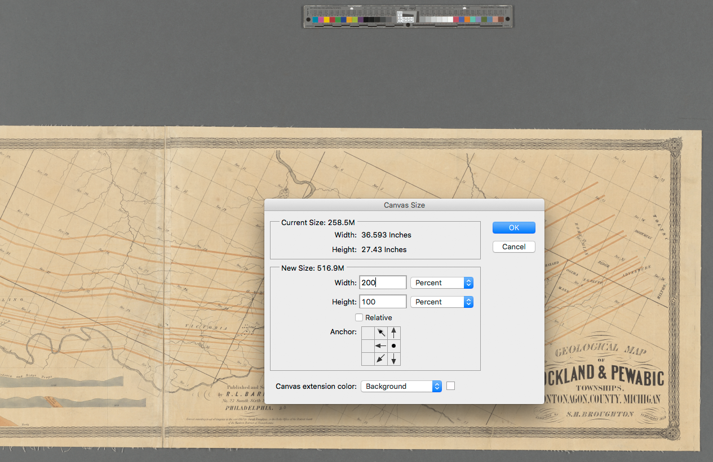
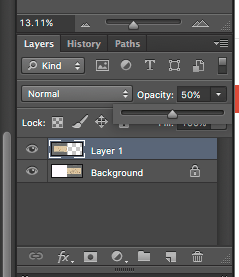
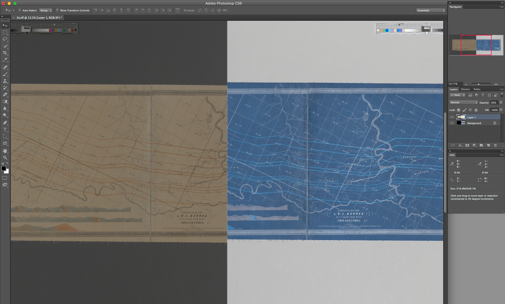
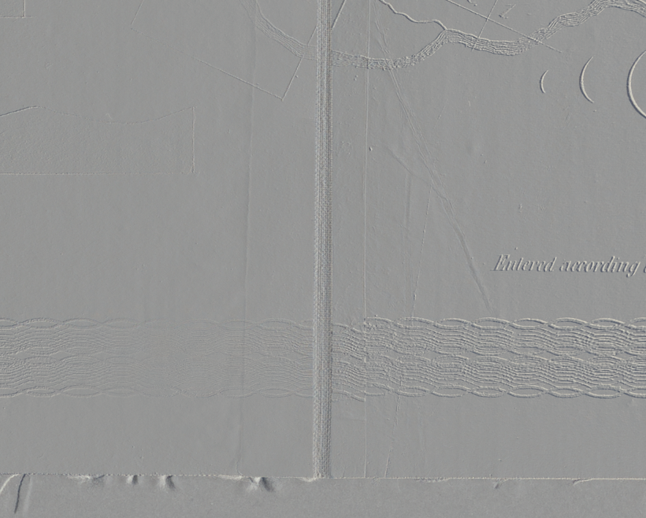
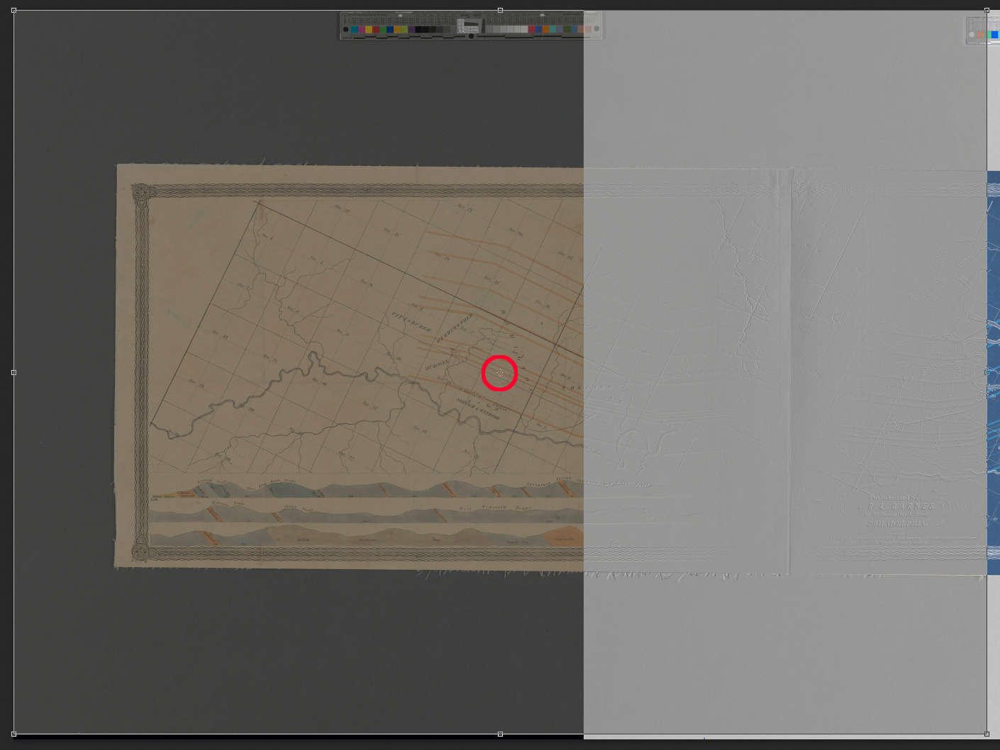
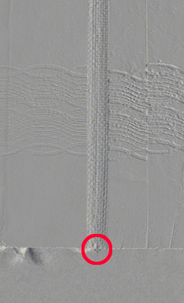
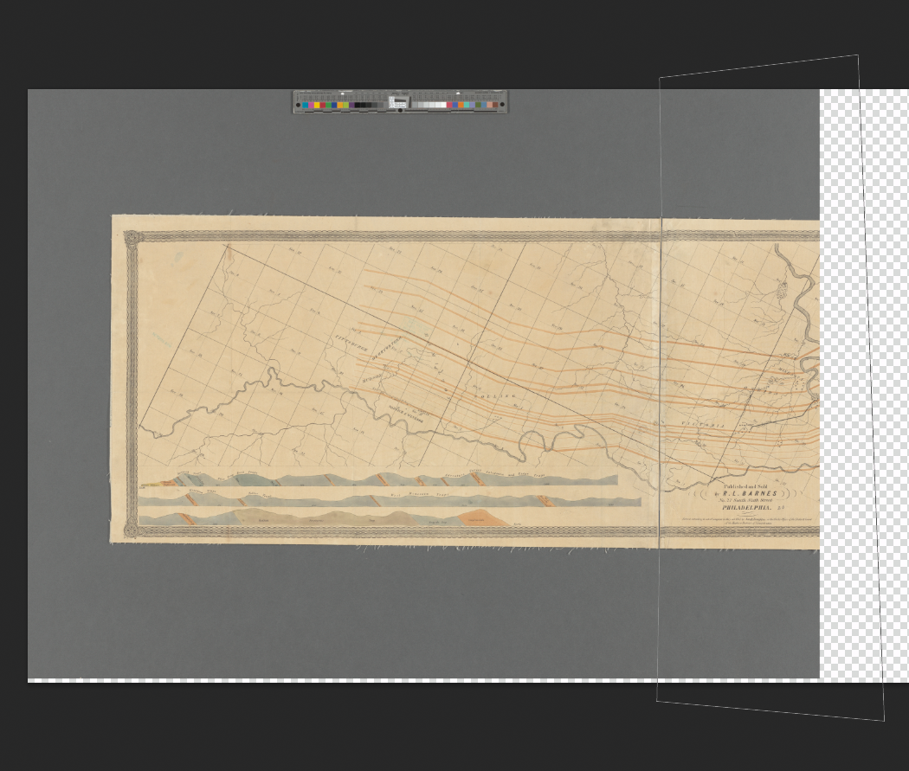
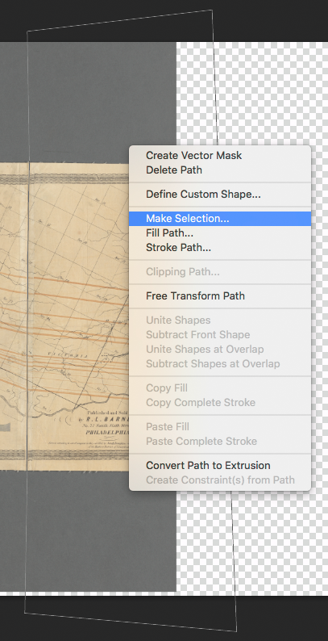
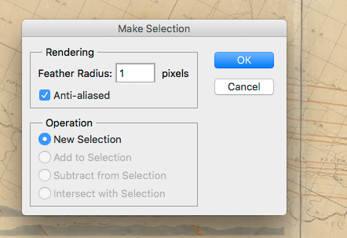

Video example for moving a color target:
Video example for the stitching of a map with two component pieces:
Video example for the stitching of a map with four component pieces:
Return Stitched Files to the Capture Folder
Once all the stitched files for a session are completed, return them, and not the component parts (delete these), to the Capture folder and sort by Name. Verify that the capture count agrees with the work order tally. Then rename all captures with Batch Renaming tool.
Sort captures by extension and move all the stitched TIFF files back to the Output folder. Open a TIFF, add the u suffix, and save.
Once a U file has been saved, create the S file in Photoshop by cropping it, and converting to sRGB: Edit > Convert to Profile > Destination space = sRGB IEC61966-2.1
Shortcut command: shift + command + k
Video example for saving U and S files for a stitched image:
The component images that make up the final S and U files can be deleted.
Lastly, return to Capture One and process out the rest of the session.